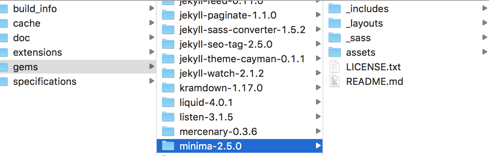
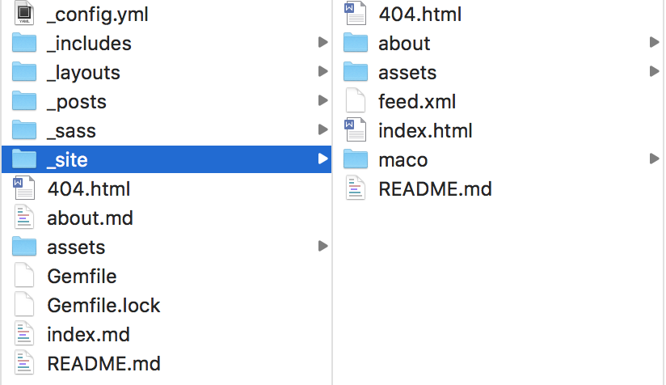

使用jekyll在gitbub page上搭建自己的博客
大家搞技术的肯定都有自己的博客，比如什么csdn、简书、博客园等等，这都是以别人搭建好的平台来写自己的博客，下面我介绍一下使用jekyll搭建自己的博客的流程。
1、在github创建项目
首先需要再github中创建一个github page，命名方式以username.github.io的形式命名，否则会出现不知名的错误，创建完成后克隆到本地，命令行到本地的存储库.io文件下，使用echo “hello world”> index.html创建一个index.html文件，然后保存，使用命令行把本地创建的文件提交到master分支，。然后使用[https://username/github.io就可以访问index.html网页了。这才是最开始的一步，只是能访问基本的网页，但是怎么写博客哪，然后又是在什么目录下写，使用什么工具写哪，下面就介绍jekyll。
注意⚠️：提交代码后在setting页面下面的github page选项下选择theme后才可以正确访问
2、构建jekyll
首先安装ruby，因为jekyll是基于ruby语言的，jekyll本身就是一个ruby包，所以需要必须让ruby使用jekyll，Mac系统本身安装了ruby。
安装jekyll：一旦安装了ruby，就会使ruby的名为Gem的包管理器安装jekyll
$ sudo gem install jekyll bundler
3、使用jekyll创建本地博客
首先使用jekyll命令创建本地文件夹：
$ jekyll new my-awesome-site
命令行到这个文件夹，测试本地博客
部署jekll：bundle exec jekyll serve
如果报告找不到bundle或者jekll，使用sudo，完成后，浏览器访问http://localhost:4000，就可以查看本地index.html网页
把创建好的jekyll部署到github page，将我们创建的my-awesome-site文件夹中的所有内容拷贝到我们本地的git中，然后提交给git，然后部署一下jekyll，然后浏览器访问：https://username.github.io 就可以访问构建的jekyll博客了。
4、修改博客布局
修改本地的博客，本地存储博客的文件夹在_posts中，然后通过jekyll编译部署后，在_site/maco中转化成.html的文件，_site文件夹不会上传到git上去的，部署后会生成jekyll节点，可以在_config.yml中配置属性以及信息。


想更好的修改页面，查看http://jekyllcn.com/docs/home/